PROJECT / 003 · PRODUCT MODELING
Mint Smartphone Study
A product-modeling study of a mint-green smartphone, featuring a rounded body, front display and pill-shaped camera cutout, rear camera array, side controls, and layered camera housing. The gallery combines presentation renders with solid, X-ray, and wireframe views of the model.
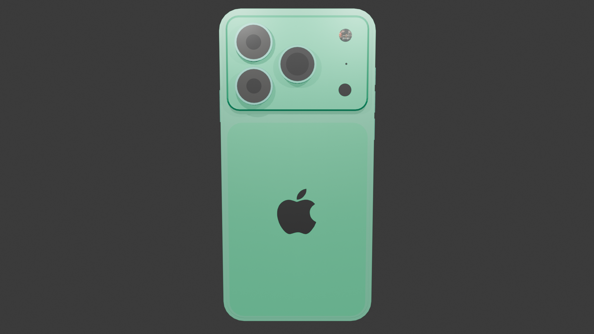
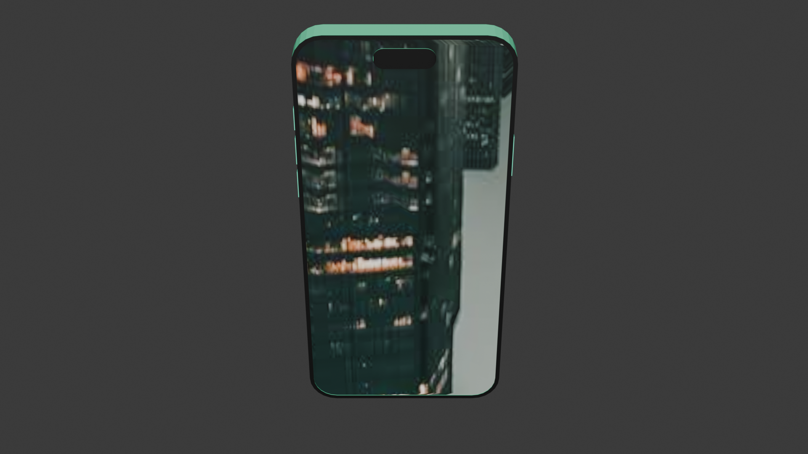
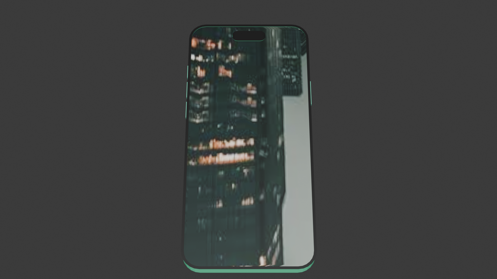
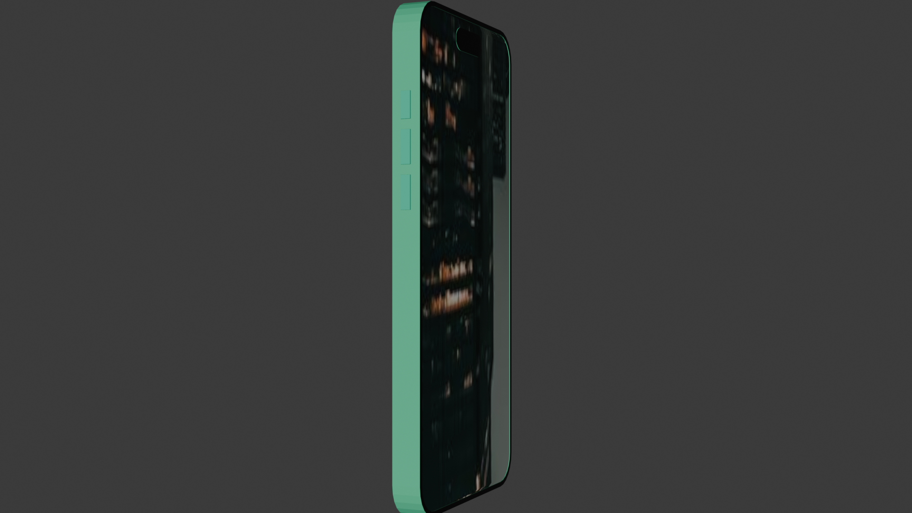
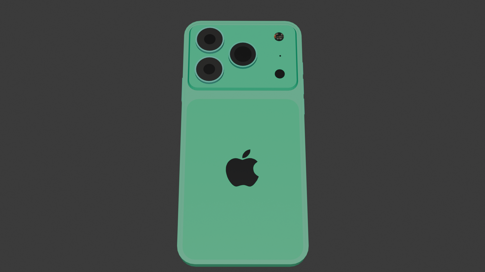
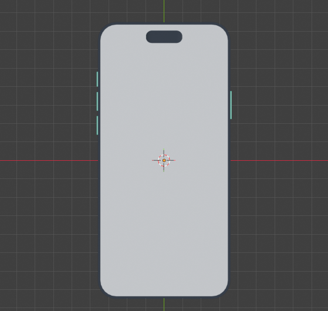
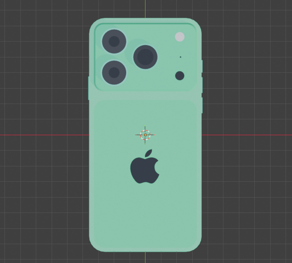
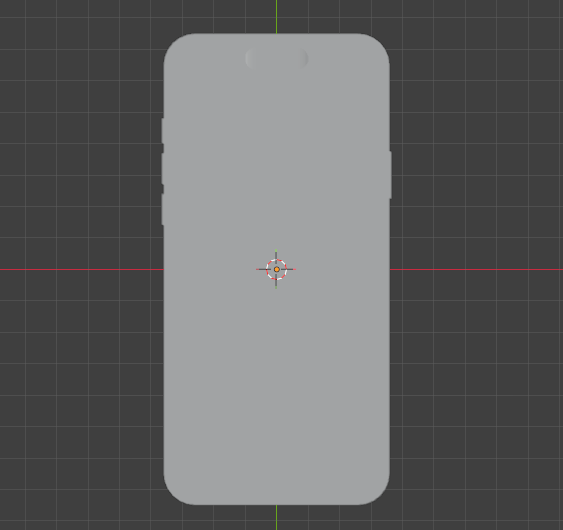
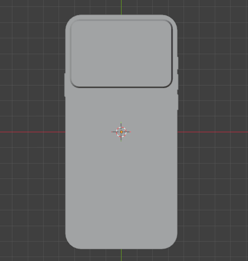
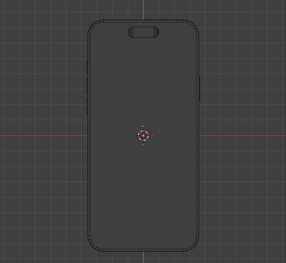
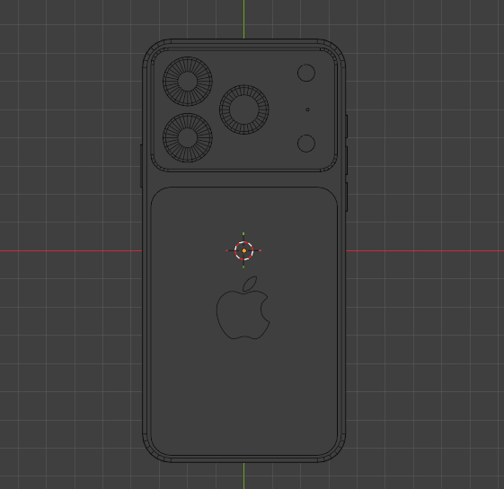
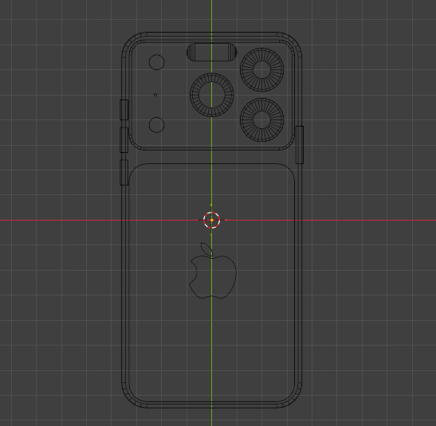
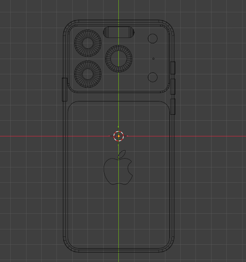
Project video / walkthrough
Video link for Mint Smartphone Study
Modeling focus
This study focuses on the smartphone's recognizable product forms: the rounded outer shell, front display opening, rear camera lenses and raised camera island, and side buttons. The viewport references show the model from multiple inspection modes.
Presentation notes
The mint finish gives the model a clear visual identity. For a future refinement, consider adding close-up camera details, cleaner studio reflections, and a few macro renders that show the edge treatment and material separation.